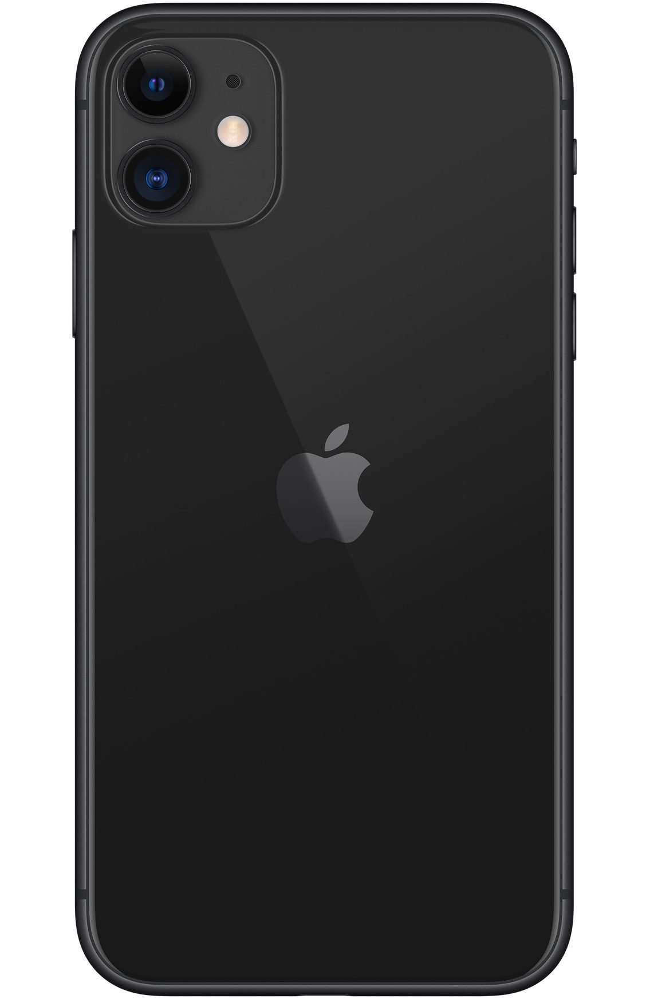

This website uses well researched algorithms to advise you on which phone to buy based on questions you are asked

Why?
Using the global contect; "Globalisation and Sustainability", I have created a webssite that will help people make smart choices when buying a mobile phone based off sustainability and whether the phone is worth it for that person